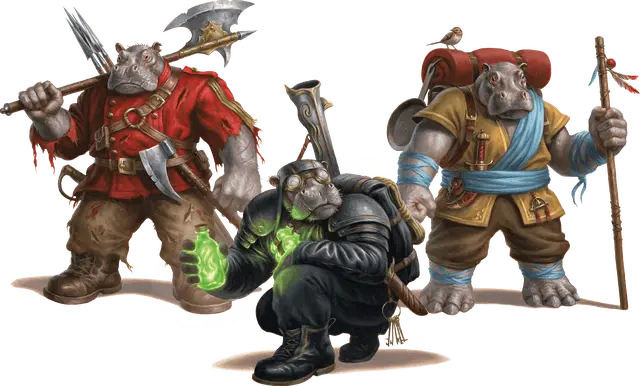

Гифф
Giff

Создание вашего персонажа
Когда вы создаёте своего персонажа в D&D, вы решаете, является ли он представителем человеческой расы или одной из фантастических рас, включая те, что представлены в этой главе. Если вы создаёте персонажа, используя опцию расы, представленную здесь, следуйте описанным ниже правилам.
Увеличение характеристик
При определении значений характеристик вашего персонажа увеличьте одну из характеристик на 2, а другую — на 1, или увеличьте три различные характеристики на 1. Следуйте этому правилу независимо от метода, который вы используете для определения характеристик, бросаете ли вы кости или настраиваете значения.
Раздел «Быстрое создание» в выбранном вами классе даёт рекомендации по тому, какие характеристики увеличить. Вы вольны следовать этим советам или игнорировать их. Какие бы значения вы ни решили увеличить, значение ни одной характеристики не может превышать 20.
Языки
Ваш персонаж может говорить, читать и писать на Общем и ещё на одном языке, который вы и Мастер сочтёте подходящим для персонажа. «Книга игрока» содержит список распространённых языков на выбор. Мастер может свободно добавлять или удалять языки из этого списка для нужд кампании.
Вид существа
У каждого существа в D&D, включая каждого персонажа игрока, в правилах есть специальный тег, определяющий вид существа. Большинство персонажей игроков является Гуманоидами. В представленных вариантах рас указано, к какому виду существ относится ваш персонаж.
Вот список видов существ в игре в алфавитном порядке: Аберрация, Великан, Гуманоид, Дракон, Зверь, Исчадие, Конструкт, Монстр, Небожитель, Нежить, Растение, Слизь, Фея, Элементаль. Для видов не существует конкретных правил, но некоторые элементы игры различны для существ разных видов. Например, в тексте заклинания лечение ран [cure wounds] указано, что оно не действует на конструктов. Автогном является исключением из-за его особенности «Лечащая машина».
Продолжительность жизни
Типичная продолжительность жизни персонажей игроков в мультивселенной D&D составляет около века, если персонаж не умрёт насильственной смертью в приключениях. Представители некоторых рас, таких как гномы и эльфы, могут жить столетиями — факт, отмеченный в описании этих рас.
Рост и вес
Персонажи игроков, вне зависимости от расы, обычно имеют примерно тот же рост и вес, как люди в реальном мире. Если вы хотите определить рост или вес персонажа случайным образом, обратитесь к таблице «Случайный рост и вес» в «Книге игрока», и выберите строку в таблице, наилучшим образом описывающую ваше представление о персонаже.
Гиффы — высокий широкоплечий народ с гиппопотамскими чертами лица. У одних гладкая кожа, у других короткие щетинки на лице и макушках. Будучи существами внушительных размеров и незабываемой внешности, гиффов замечают везде, куда бы они ни пошли.
Большинство гиффов верят, что они возникли в одном мире, но их родной мир теперь стал легендой, потому что ни один живой гифф не видел его и не знает, где он находится. Божественные существа, создавшие гиффов, также были забыты. Их титанические окаменевшие тела дрейфуют в Астральном море, изолированные и неузнаваемые в своем нынешнем виде.
Гиффы разделились на два лагеря относительно того, как произносится название их народа. Половина из них говорит «гифф», другая половина — «хыфф». Разногласия по поводу правильного произношения часто перерастают в обиды, громкие споры и бодания головами, но редко выходят за эти границы.
Хотя они и не осознают этого, гиффы тянутся к астральному плану, потому что на глубоком психическом уровне они остаются связанными со своими богами-создателями, в которых осталось достаточно божественной искры, чтобы наполнить гиффов своими собственными искрами, которые гиффы научились направлять через своё оружие. Большинство гиффов понятия не имеют, откуда берётся эта, так называемая, астральная искра, но сильнее всего они ощущают её присутствие, когда находятся в Диком космосе или Астральном Море.
Особенности Гиффов
Вы обладаете следующими особенностями.
Увеличение характеристик. Либо значение одной характеристики по вашему выбору увеличивается на 2, а другой — на 1, либо значение трёх различных характеристик по вашему выбору увеличивается на 1.
Вид существа. Вы — Гуманоид.
Размер. Ваш размер — Средний.
Скорость. Ваша базовая скорость ходьбы равна 30 футов, а также вы имеете скорость плавания, равную скорости ходьбы.
Астральная искра. Ваша психическая связь с Астральным планом позволяет вам мистическим образом получить доступ к искре божественной силы, которую вы можете направить через своё оружие. Когда вы попадаете по цели простым или воинским оружием, вы можете заставить цель получить дополнительный урон силовым полем, равный вашему бонусу мастерства.
Вы можете использовать эту особенность количество раз, равное вашему бонусу мастерства, но вы можете использовать её не более одного раза за ход. Вы восстанавливаете все потраченные использования, когда заканчиваете продолжительный отдых.
Владение огнестрельным оружием. У вас есть мистическая связь с огнестрельным оружием, восходящая к богам гиффов, которым это оружие нравилось. Вы владеете всеми видами огнестрельного оружия и игнорируете свойство «перезарядка» любого огнестрельного оружия. Кроме того, атака из огнестрельного оружия на максимальной дистанции не накладывает помеху на бросок атаки.
Сила бегемота. Вы совершаете с преимуществом проверки и спасброски Силы. Кроме того, при определении вашей грузоподъёмности, а также веса, который вы можете толкать, тянуть и поднимать, вы считаетесь существом на один размер больше.